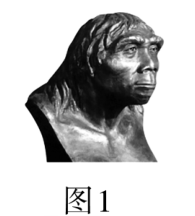
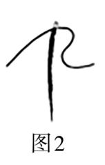
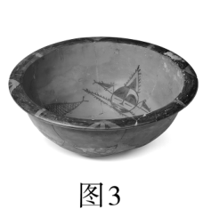
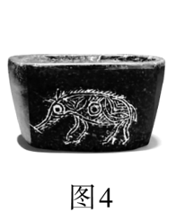
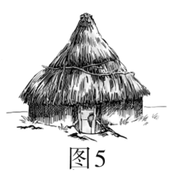
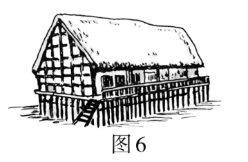
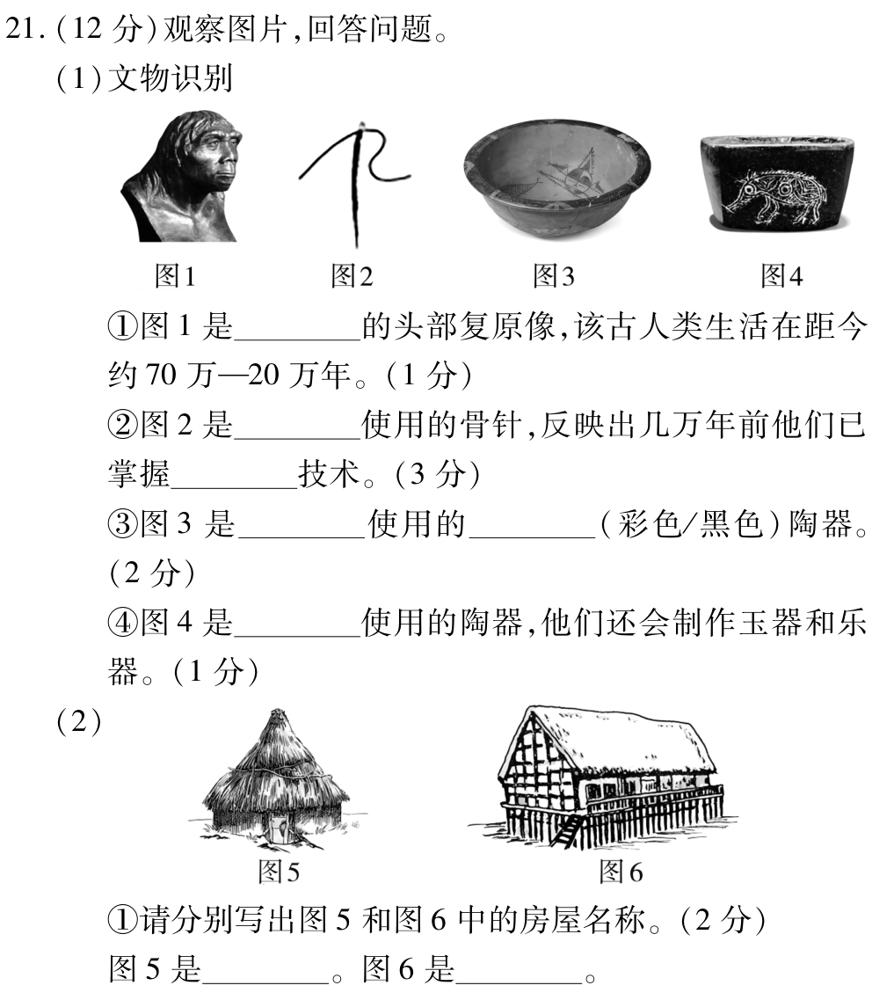
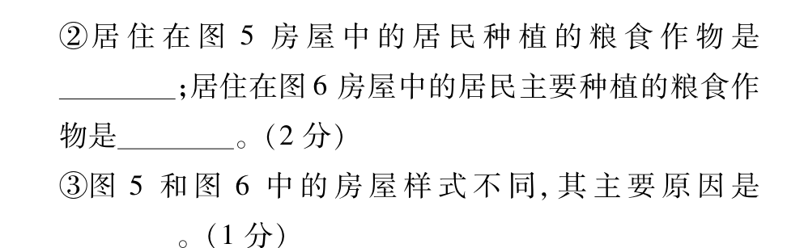

（1）文物识别
①图1是____的头部复原像，该古人类生活在距今约70万—20万年。（1分）
②图2是____使用的骨针，反映出几万年前他们已掌握____技术。（3分）
③图3是____使用的____（彩色/黑色）陶器。（2分）
④图4是____使用的陶器，他们还会制作玉器和乐器。（1分）
（2）
①请分别写出图5和图6中的房屋名称。（2分）图5是____。图6是____。
②居住在图5房屋中的居民种植的粮食作物是____；居住在图6房屋中的居民主要种植的粮食作物是____。（2分）
③图5和图6中的房屋样式不同，其主要原因是____。（1分）
第一部分 文物识别：
第二部分 房屋识别：
北京人距今约70万—20万年，使用打制石器，使用天然火；山顶洞人距今约3万年，掌握磨光和钻孔技术，会人工取火，用骨针缝制衣服。
半坡人在黄河流域，种植粟，居住半地穴式房屋，制作彩陶；河姆渡人在长江流域，种植水稻，居住干栏式房屋，制作黑陶。
半坡人制作彩陶，色彩鲜艳，代表是人面鱼纹陶盆；河姆渡人制作黑陶，颜色发黑，代表是猪纹黑陶钵。
半地穴式房屋一部分在地下，保暖防风，适合干燥寒冷的环境；干栏式房屋高于地面，通风防潮，适合温暖湿润的环境。
实际上，地理环境不同才是主要原因，生活习惯也是由地理环境决定的。
骨针反映了山顶洞人掌握了磨光和钻孔技术，不是简单的打制技术。
点击图片可放大查看

